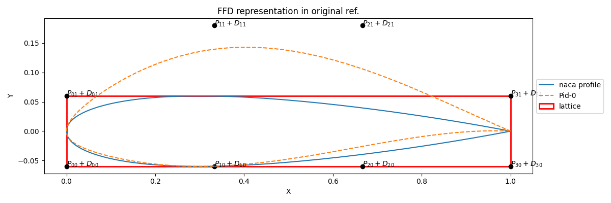
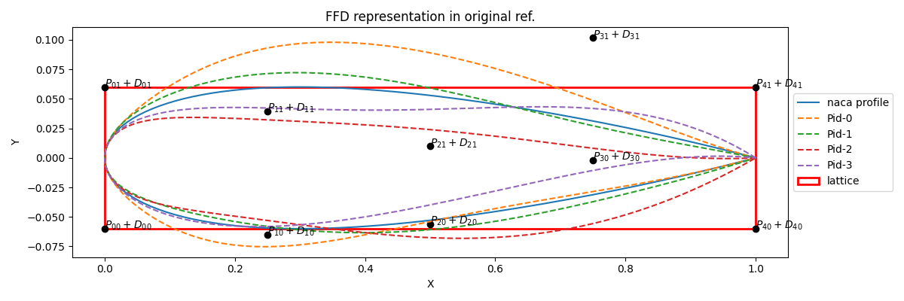

Free-Form Deformation Module
Free-form Deformation (FFD) is a technique designed to deform solid geometric models in a free-form manner. It was originally introduced by Sederberg in 1986 (doi). The present implementation is based on the description in Duvigneau 2006.
The main steps of FFD are:
1) create a lattice, i.e. the minimal parallelepiped box that embeds the geometry (a rectangle in 2D),
2) project the geometry points into the lattice referential such that its coordinates now vary between [0;1] in both x and y directions,
3) for a given deformation vector applied to each control points of the lattice, the displacements of all points forming the geometry are computed with the tensor product of the Bernstein basis polynomials,
4) the deformed profile is finally projected back into the original referential.
Note
This implementation is limited to 2D geometries only. More sophisticated libraries exist such as PyGeM or pyGeo but they come with heavier dependencies and more cumbersome installation procedures.
2D FFD
Free-Form Deformation is implemented in FFD_2D, a straightforward class instantiated with two positional arguments:
file (str)which indicates the filename of the baseline geometry to be deformed,ncontrol (int)which indicates the number of design points on each side of the lattice.
Warning
The input file is expected to have a specific formatting i.e. a 2 line header followed by coordinates given as tabulated entries (one point per row) with single space separators (see data/naca12.dat for an example).
Once instantiated, the apply_ffd(Delta) method can be used to perform the deformation corresponding to the array Delta.
Illustration
An FFD with 2 control points (i.e. 4 in total) and the deformation vector Delta = (0., 0., 1., 1.) will yield the following profile:

Considering the figure notations, one notices that the deformation vector Delta corresponds to the list of deformations to be applied to the lower control points followed by those applied to the upper control points. In this case, Delta is: $$(D_{10}=0.,\, D_{20}=0.,\, D_{11}=1.,\, D_{21}=1.)$$ in lattice unit. The corner points are left unchanged so that the lattice corners remain fixed.
Quick Experiments
The auto_ffd.py scripts is called with the ffd command. It enables basic testing and visualization. It comes with a few options:
ffd --help
usage: ffd [-h] [-f FILE] [-o OUTDIR] [-nc NCONTROL] [-np NPROFILE] [-r] [-s SAMPLER] [-d [DELTA ...]]
options:
-h, --help show this help message and exit
-f FILE, --file FILE baseline geometry: --datfile=/path/to/file.dat (default: None)
-o OUTDIR, --outdir OUTDIR
output directory (default: output)
-nc NCONTROL, --ncontrol NCONTROL
number of control points on each side of the lattice (default: 3)
-np NPROFILE, --nprofile NPROFILE
number of profiles to generate (default: 3)
-r, --referential plot new profiles in the lattice ref. (default: False)
-s SAMPLER, --sampler SAMPLER
sampling technique [lhs, halton, sobol] (default: lhs)
-d DELTA, --delta DELTA
Delta: 'D10 D20 .. D2nc' (default: None)
For instance, the command below will perform 3 control points FFDs for 4 random deformations sampled with an LHS sampler:
# from aero-optim to naca_base
cd examples/NACA12/naca_base
ffd -f ../data/naca12.dat -np 4 -nc 3 -s lhs

Note
The positions of the deformed control points on the generated figure correspond to those of the last profile, in this case Pid-3.